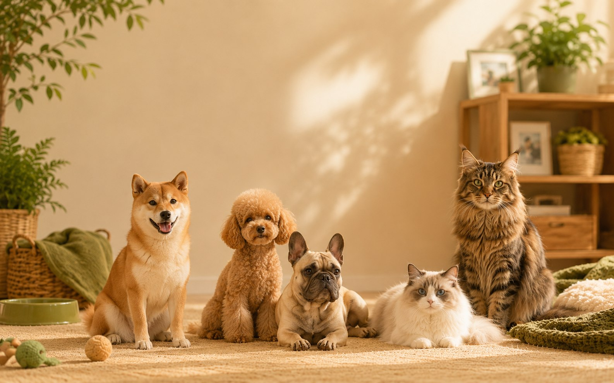

生活空間
先評估居住空間、活動區域、貓跳台或散步條件，不只看外型大小。
同一種照護方式不一定適合每一隻毛孩。這裡不只介紹品種外觀與個性，也整理到家適應、活動需求、飲食與體重、毛髮照護、健康觀察與家庭適配，幫助你在喜歡一個品種之前，先理解牠真正需要什麼。

現在不再只是示範頁，而是把常見新手會搜尋的品種一次整理完成。每個頁面都延伸到個性、到家第一週、日常照護與健康觀察，方便你持續擴充品牌內容與 SEO 架構。
先評估居住空間、活動區域、貓跳台或散步條件，不只看外型大小。
高互動或高活動需求的品種，需要穩定陪伴，不適合只靠週末補償。
長毛、捲毛、掉毛量與美容頻率，都會影響時間與長期照護預算。
品種頁提供風險觀察方向，但個體仍應由獸醫評估與規劃健康管理。